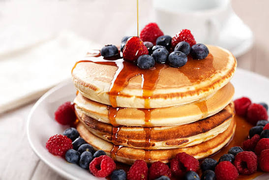

Pancake

Description
This is an easy to make pancake recipe using less ingredient.
The steps provided here are easy to follow, and will make you look like a pro, to create the most delicious pancake ever made.
Ingredients
- 1-Cup of flour
- 1/2-Teaspoon of baking powder
- 1/4-Teaspoon of salt
- 2-Tablespoon of sugar
- 2-Ripe bananas
- 1-Large egg
- 1-Cup of milk
- 1-Teaspoon of vanilla
- 3-tablespoons of butter
Steps
- Pour the cup of flour in a bowl, add 1/2 a teaspoon of baking powder, then 1/4 of a teaspoon of salt, and 2-tablespoons of sugar and whisk them all to combine;
- Mash 2-ripe bananas in a bowl, add 1-large egg, add a cup of milk, add a teaspoon of vanilla, and then 3-tablespoons of melted butter and mix;
- Combine both the dry and wet mixtures together, hit the pan and rub some butter on it. Pour the pancake batter in the pan, and cook each side for 1 min over a low flame.
Home